VISION
UX LAB
Explora herramientas para diseñar interfaces accesibles para personas con discapacidades visuales.
ACERCA DE
Vision UX Lab nace con el objetivo de transformar el diseño web y hacerlo accesible para todos, sin importar sus capacidades visuales. En un mundo digital que avanza rápidamente, es esencial que las experiencias en línea sean inclusivas, permitiendo que todas las personas, incluidas aquellas con discapacidad visual, puedan acceder, navegar y disfrutar del contenido de manera equitativa.
MISIÓN
Proporcionar herramientas y recursos que ayuden a capaciar a diseñadores y desarrolladores para crear sitios web inclusivos, enfocados en mejorar la experiencia de usuarios con discapacidad visual.
VISIÓN
Ser un recurso valioso para diseñadores y desarrolladores que buscan mejorar la accesibilidad en sus proyectos web. Queremos promover un diseño más inclusivo para personas con discapacidad visual.
¡HAZLO VISIBLE!
Te invitamos a compartir Vision UX Lab con tu comunidad. Ayúdanos a ampliar el acceso a herramientas y recursos que faciliten la creación de sitios web más accesibles.